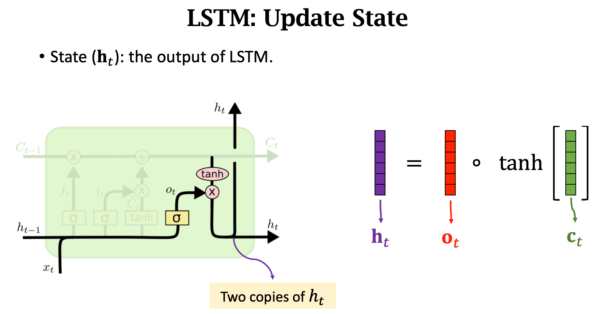

chapter 4.3 循环神经网络2-长短期记忆网络（LSTM）
TLDR
LSTM是一个循环神经网络，可以看成是一个带状态的函数。它是按时间顺序处理输入信息的：每个时间步输入新的信息，就更新一次状态，然后输入下一个时刻信息，又更新一次状态，依次循环下去，直到达到最大的时间窗口长度。
一个LSTM单元的内部有四个参数矩阵，分别作用于当前观测向量和上个时刻的短期记忆向量，得到3个门向量，和一个候选状态向量。然后，将上个时刻的长期记忆向量以及候选状态向量使用门向量进行加权求和得到新的长期记忆向量，将新的长期记忆向量进行双曲正切变换然后使用遗忘门向量加权得到得到新的短期记忆向量
LSTM原理
LSTM是一个循环神经网络，可以看成是一个带状态的
LSTM按时间顺序处理输入信息的：每个时间步输入新的信息，就更新一次状态，然后输入下一个时刻信息，又更新一次状态，依次循环下去，直到达到最大的时间窗口长度。
LSTM单元根据每个时刻的输入来更新状态的底层原理是这样的：输入当前观测向量，以及输入上个时刻的长期记忆向量和短期记忆向量，输出当前时刻的长短期记忆向量，作为lstm下次计算的输
LSTM单元的内部处理流程是这样的：有四个参数矩阵，分别作用于当前观测向量和上个时刻的短期记忆向量，得到3个门向量，和一个候选状态向量。3个门向量分别是遗忘门/输入门/输出门，分别对应三个参数矩阵对观测值和短期记忆向量的线性变换+sigmoid变换。一个候选状态向量是第4个参数矩阵对观测值和短期记忆向量的线性变换+双曲正切变换
将上个时刻的长期记忆向量以及候选状态向量进行加权求和得到新的长期记忆向量，权重分别为遗忘门向量和输入门向量。
将新的长期记忆向量取双曲正切，然后与输出门向量进行点乘，得到新的短期记忆向量或者说隐藏状态向量。
LSTM是一个循环神经网络，即RNN模型，是对Simple RNN的一种改进，可以避免梯度消失问题, 可以有比simple RNN更长的记忆。LSTM的论文在1997年就发表了。
LSTM的结构比simple-RNN的结构复杂很多，Simple RNN有1个参数矩阵，LSTM有四个参数矩阵，每个矩阵的维度都是h * (h + m)。
LSTM也可以看成一个带状态的函数：输入当前词的embedding向量（维度为m），上一个时刻的短期记忆向量（状态向量，h维），上一个时刻的长期记忆向量（h维）；输出当前时刻的短期记忆向量（状态向量，h维）和当前时刻的长期记忆向量（h维）。
LSTM通过引入长期记忆向量（传输带，conveyor belt）来缓解梯度消失的问题。过去的信息通过是通过跟最新的信息求和的形式传输带到达下一个时刻，过去的信息不回随着时间的推近而影响弱化。
LSTM的处理流程可以描述为：
- 对上个时刻的长期记忆选择性遗忘（遗忘门），对临时短期记忆选择性保留（输入门），两个向量求和得到了新的长期记忆；
- 将新的长期记忆选择性输出（输出门），得到新的短期记忆。
LSTM有3个门，分别为输入门，输出门，遗忘门，也是三个权重向量，取值范围从0到1
遗忘门：控制上一个时刻的长期记忆（传送带向量
）需要遗忘多少信息 输入门：控制临时短期记忆需要保留多少信息
遗忘门 + 输入门的共同作用结果是，得到新的长期记忆响亮（传送带向量
） 输出门：控制新的长期记忆（传送带向量
）需要输出多少信息，给新的短期记忆。
LSTM处理过程用数学公式表达


附录
LSTM的内部结构
LSTM最重要的设计是一个传输带（conveyor belt），记为向量
, 过去的信息通过传输带直接传到下一个时刻 ，不会发生太大的变化。LSTM就是靠传输带来避免梯度小时的问题。 遗忘门的输入是上一个时刻的状态
和当前时刻的观测值 ，通过遗忘矩阵 加上一个sigomid变换，得到一个概率向量。  。
。 
LSTM的遗忘门（forget gate）的作用是，让传输带上的信息有选择性的通过，选择性是由遗忘门向量控制的，通过遗忘门向量与传送带向量
点乘来实现。 
遗忘门/输入门/输出门的输入也是上一个时刻的状态
和当前时刻的观测值 。 
输入门的目的是，让上一个时刻的状态和最新的信息，能有选择性的通过。通过计算输入门向量跟临时短期记忆向量（参数矩阵跟
的乘积再做双曲正切）的点乘来实现。 双曲正切函数可以把上一个时刻的状态和新的观测值组成的向量映射到[-1，1]之间，
输出门的目的是，让最新的长期记忆有选择性的输出，也就是最新的状态向量
。通过将输出门向量 跟最新的长期记忆向量（传输带最新值 ）的双曲正切值进行点乘来实现。

- 新的状态向量
有两份copies，一份作为当前时刻的输出，一份作为下一个时刻lstm单元的输入。可以认为迄今为止，t个时刻的输入信息都被编码到了状态向量 中。 
- LSTM有遗忘门，输入门，new value，输出门，一共对应4个参数矩阵。矩阵的行数是长期记忆向量的长度（h），矩阵的列数是短期状态向量的长度（h）+输入向量的长度（m）。

- 更新长期记忆-传送带向量

- 更新短期机器-状态向量

LSTM应用-情感判断


cnn 和 rnn视觉对比


cnn vs rnn vs attention